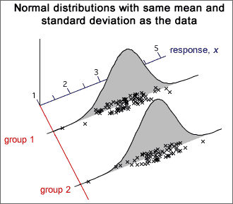
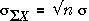
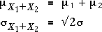
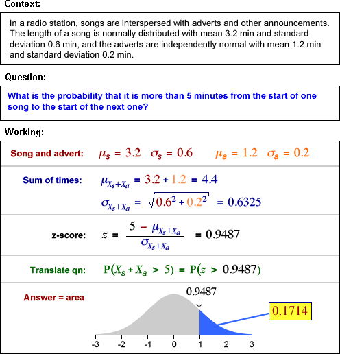
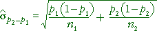
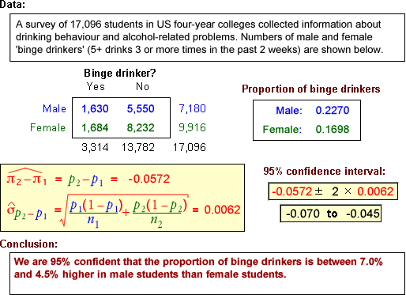

If you don't want to print now,
Paired data
When two types measurements, X and Y, are made from each individual (or other unit), the data are called bivariate. Sometimes the two measurements are of closely related quantities and may even describe the same quantity at different times.
When the sum or difference of X and Y is a meaningful quantity, the data are called paired data.
Hypotheses of interest
For paired data, We often want to test whether the means of the two variables are equal,
H0 : μX = μY
HA : μX ≠ μY
Sometimes a one-tailed test is required, such as
H0 : μX = μY
HA : μX > μY
Examples
Differences
Information about the difference between the means of X and Y is contained in the values D = (Y - X) for each individual. The hypotheses
H0 : μX = μY
HA : μX ≠ μY
can then be expressed as
H0 : μD = 0
HA : μD ≠ 0
This reduces the paired data set to a univariate data set of differences, D, and reduces questions about (µY - µX) to questions about the mean of D.
Analysis of paired data
By taking differences between Y and X, much of the variability between the individuals is eliminated, making it easier to see whether their means are different. The example below shows paired data on the left with blue lines joining the x- and y-values in each pair. The differences on the right make it clearer that the y-values are usually higher than the corresponding x-values.
Approach (paired t-test)
Testing whether two paired measurements, X and Y, have equal means is done in terms of the differences
D = Y - X
The test is then expressed as
H0: µD = 0
HA: µD ≠ 0
or a one-tailed variant. The hypotheses are therefore assessed with a standard univariate t-test using test statistic

This is compared to a t distribution with n - 1 degrees of freedom to find the p-value.
Example
The diagram below illustrates a 2-tailed test for equal means, based on n = 15 paired observations.

From the p-value, we conclude that there is very strong evidence that the means for Y and X are different.
Choice between paired data or two independent samples
It is sometimes possible to answer questions about the difference between two means by collecting two alternative types of data.
If the individuals in the 2 groups can be paired so that the pairs are relatively similar, a paired design gives more accurate results.
Matched pairs in experiments
In experiments to compare two treatments, it may be possible to group the experimental units into pairs that are similar in some way. These are called matched pairs. If the two experimental units in each pair are randomly assigned to the two treatments, the data can be analysed as described in this section.
The difference between the treatments is estimated more accurately than in a completely randomised experiment.
Data from two groups
When data are collected from two groups, we are usually interested in differences between the groups in general. The specific individuals are of less interest. Questions are therefore about the characteristics of the populations or processes that we assume underlie the data.
Example

The questions do not refer to the 16 specific subjects — they ask about whether anticipation of hypnosis affects the ventilation rate in general. We would like to use the answers to predict what will happen to other people.
Data and model
Data from two groups can be displayed with two histograms:

They are often modelled as two independent random samples from two underlying populations. Normal distributions are again commonly used as models.

The diagram below illustrates a possible model for the data above.

Parameters
A normal model for two groups has four unknown parameters (the mean and standard deviation for each normal distribution). These parameters give considerable flexibility and allow the model to be used for a variety of different data sets.
(The number of parameters can be reduced to three if it is assumed that the two standard deviations are the same, but we will not consider this type of model here.)
Parameter estimates
A normal model for 2-group data involves 4 unknown parameters, µ1, µ2, σ1 and σ2. The means and standard deviations in the two samples provide objective estimates of the four parameters.

Comparing the populations
Although standard deviations in the two populations may also differ, we are usually most interested in the difference between the population means. Differences between the means can be expressed in terms of the model parameters with the following questions.
Randomness of sample difference
These questions are about µ2 - µ1 and the
best estimate of it is  .
However,
.
However,  cannot
give definitive answers since
it is random — it varies from sample to sample.
cannot
give definitive answers since
it is random — it varies from sample to sample.

Without an understanding of the distribution of  ,
it is impossible to properly interpret what the sample difference, 0.104 kg,
tells you about the difference between the underlying population means.
,
it is impossible to properly interpret what the sample difference, 0.104 kg,
tells you about the difference between the underlying population means.
Sample mean and sum
The mean of a random
sample,  ,
has a distribution that is approximately normal if the sample size, n, is
large and alway has a
mean and standard deviation that depend on the population mean, µ, and standard deviation,
σ,
,
has a distribution that is approximately normal if the sample size, n, is
large and alway has a
mean and standard deviation that depend on the population mean, µ, and standard deviation,
σ,
 = μ
= μ
 =
= 
Occasionally the sum of values in a random sample values is more useful than the mean,

Its distribution is a scaled version of the distribution of the mean — the same shape but different mean and standard deviation.


Mean vs Sum
As the sample size increases,

Sum and difference of two variables
Applying the result about the sum of a random sample to a sample of size n = 2, X1 and X2,

If we generalise by allowing X1 and X2 to have different means, µ1 and µ2, but the same σ,

A similar result holds for the difference between X1 and X2:

If X1 and X2 are independent and have normal distributions, their sum and difference are also normally distributed.
General result
The results generalise further to independent variables that may have different means and standard deviations.

The formulae for the standard deviations are more easily remembered in terms of the variances of the quantities. For example,

Finding probabilities
To find the probability that a sum or difference satisfies an inequality, the inequality should be translated into ones about a z-score, using the mean and standard deviation of the quantity,

The standard normal distribution can then be used to find the probabilities. The examples below illustrate the method.
Example (total of several variables)

Example (sum of two variables with different sd)

Difference between means
The difference between any two independent quantities X1 and X2 has a distribution with

Applying this to the difference between the means of two random samples,

Irrespective of the distributions within the
two groups,

Estimation error
The difference between the sample means,  ,
is a point estimate of the difference between the means of the underlying populations, µ2 - µ1.
In order to properly interpret it, we must understand the distribution of
the estimation error.
,
is a point estimate of the difference between the means of the underlying populations, µ2 - µ1.
In order to properly interpret it, we must understand the distribution of
the estimation error.

Replacing σ12 and σ22 by s12 and s22 gives an approximate error distribution,

The standard deviation of these errors is the standard error of the estimator.
Examples

Our best estimate is that anticipation of hypnosis results in a mean ventilation rate that is 0.491 higher than the control group. From the error distribution, the error in this estimate is unlikely to be more than about 0.6.
If σ1 and σ2 were known...
Prob (  is within ± 1.96
is within ± 1.96  of μ2 - μ1) = 0.95
of μ2 - μ1) = 0.95
so a 95% confidence interval for µ2 - µ1 would be
 ± 1.96
± 1.96 
When σ1 and σ2 are unknown...
We must replace σ1 and σ2 by s1 and s2 in the confidence interval, and the constant '1.96' must be replaced by a slightly larger value from t-tables,

where the degrees of freedom for the t-value are
ν = min (n1−1, n2−1)
(A more complex formula is available that gives a higher value for ν. It is slightly better but the difference is usually negligible.)
Example

Testing for a difference between two means
The difference between two groups that is of most practical importance is a difference between their means.
H0 : μ2 − μ1 = 0
HA : μ2 − μ1 ≠ 0
The summary statistic that throws most light on these hypotheses is the difference
between the sample means,  .
Testing therefore involves assessment of whether this difference is unusually
far from zero.
.
Testing therefore involves assessment of whether this difference is unusually
far from zero.

As with all other hypothesis tests, a p-value near zero gives evidence that the null hypothesis does not hold — evidence of a difference between the group means.
Example

General properties of p-values
A statistical hypothesis test cannot provide a definitive answer about whether two groups have different means. The randomness of sample data means that p-values are also random quantities.
It is possible to get a small p-value (supporting HA) when H0 is true, and it is possible to get a large p-value (consistent with H0) when HA is true.
There is some chance of being misled by an 'unlucky sample.
Effect of increasing the sample size
One- and two-tailed tests for differences
In a two-tailed test, the alternative hypothesis is that the two population means are different. A one-tailed test arises when we want to test whether one mean is higher than the other (or lower than the other).

Test statistic, p-value and conclusion
Consider a test for the hypotheses,
H0 : μ1 = μ2
HA : μ1 > μ2
The alternative hypothesis is only supported by very small values of  .
This also corresponds to small values of the test statistic t ,
so the p-value is the lower tail probability of the t distribution.
.
This also corresponds to small values of the test statistic t ,
so the p-value is the lower tail probability of the t distribution.

A small p-value is interpreted as giving evidence that H0 is false, in a similar way to all other kinds of hypothesis test.
Examples

Properties of p-values
We again stress that a statistical hypothesis test cannot provide a definitive answer. The randomness of sample data means that p-values are also random quantities, so there is some chance of us being misled by an 'unlucky' sample:
Two groups of successes and failures
We now consider data that are obtained as random samples from two populations, with the sampled individuals being categorised into successes and failures.

Since our model involves only two parameters, π1 and π2, the two groups are the same only if π2 - π1 = 0. The value of π2 - π1 is usually unknown but can be estimated by p2 - p1. However p2 - p1 is a random quantity so its variability must be taken into account when interpreting its value.
Example

Note that the questions do not refer to the specific 141 births in the study. They ask about differences between winter and summer births 'in general'.
We are interested in π2 - π1 rather than p2 - p1, so we need to understand the accuracy of our point estimate.
Difference between two proportions
Within each group, the sample proportion of successes, p, has a distribution that is approximately normal in large samples and has mean and standard deviation

Applying the general results about the difference between two independent random quantities:

Since the individual proportions are approximately normal (in large samples), their difference is also approximately normal:

Standard error of p2 - p1
The standard deviation of p2 - p1 is also its standard error when it is used to estimate π2 - π1,

In practice, π1 and π2 must be replaced by their sample equivalents to estimate the standard error.

Confidence interval for difference
Most 95% confidence intervals are of the form
estimate ± 1.96 × se(estimate)
perhaps with a refinement of using a slightly higher value than 1.96 (e.g. a t-value) if the standard error is estimated. Applying this to our estimate of π2 - π1and using 2 instead of 1.96 gives the approximate 95% confidence interval

Example

Two-tailed test
H0 : π1 = π2
HA : π1 ≠ π2
For this test, the steps involved in obtaining a p-value are:

The p-value is interpreted in the same way as for all previous tests. A p-value close to zero is unlikely when H0 is true, but is more likely when HA holds. Small p-values therefore provide evidence of a difference between the population probabilities.
One-tailed test
In a 1-tailed test, the alternative hypothesis is
HA : π1 − π2 > 0 or HA : π1 − π2 < 0
The test statistic is identical to that for a 2-tailed test and the p-value is obtained in a similar way, but it is found from only a single tail of the standard normal distribution.
Alternative test statistic
Since π1 and π2 are equal if H0 is true, the overall proportion of successes, p, can be used in the formula for the standard error of p2 - p1.

This refinement makes little difference in practice, so the examples below use the 'simpler' formula that we gave earlier.
Two-tailed example

One-tailed example